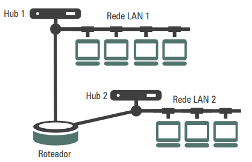
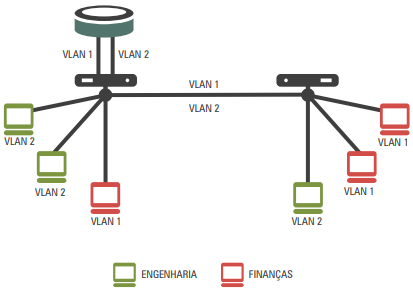
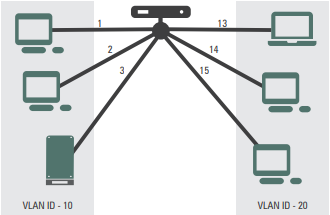

Com o crescimento das redes e do número de aplicações, surgem problemas como lentidão e propagação excessiva de pacotes de broadcast. O uso de VLANs (Redes Locais Virtuais) ajuda a resolver esses problemas ao criar domínios de broadcast separados, melhorando o desempenho e a segurança.
Características dos equipamentos:
A utilização de redes locais virtuais, as VLAN, aumenta muito a performance da rede, pois separa grandes domínios de broadcast em domínios menores e oferece características importantes como:
Importante: O gateway é o responsável por encaminhar pacotes destinados a redes externas à sua própria.
As VLANs podem ser configuradas com base em diferentes critérios de agrupamento dos computadores:
Configuração simples baseada na porta do switch. Se o computador mudar de porta, será necessário reconfigurar a VLAN.
Baseia-se no endereço MAC. A tabela a seguir ilustra o agrupamento:
| Endereço MAC | VLAN |
|---|---|
| 00-60-3E-A2-B0-5B | 10 |
| 00-E0-B0-DB-6B-A6 | 20 |
| 00-60-5C-4A-18-BB | 30 |
Baseia-se no endereço IP do dispositivo. A tabela a seguir ilustra o agrupamento:
| Endereço IP | VLAN |
|---|---|
| 172.33.12.14 | 10 |
| 172.33.20.40 | 20 |
| 172.145.34.30 | 30 |
Para comunicação entre VLANs, é necessária uma porta trunk ou o uso de um roteador.
O endereço IP define o agrupamento das VLANs. Exemplo:
Quadro 1 – Comandos para configuração de VLAN e das portas associadas:
Switch> enable Switch# configure terminal Switch(config)# vlan 10 Switch(config-vlan)# name engenharia Switch(config)# vlan 20 Switch(config-vlan)# name financas Switch(config)# interface fastEthernet 0/2 Switch(config-if)# switchport mode access Switch(config-if)# switchport access vlan 10 Switch(config)# interface fastEthernet 0/3 Switch(config-if)# switchport mode access Switch(config-if)# switchport access vlan 20 Switch(config)# interface fastEthernet 0/4 Switch(config-if)# switchport mode access Switch(config-if)# switchport access vlan 20
Importante: Para comunicação entre switches, configure as portas trunk:
SwitchENGENHARIA(config)# interface fastEthernet 0/1 SwitchENGENHARIA(config-if)# switchport mode trunk SwitchFINANCAS(config)# interface fastEthernet 0/1 SwitchFINANCAS(config-if)# switchport mode trunk
Quadro 2 – Endereços de computadores e VLANs associadas:
| Computador | Endereço IP | VLAN |
|---|---|---|
| PC 0 | 192.168.10.2 | VLAN 10 |
| PC 1 | 192.168.10.3 | VLAN 10 |
| PC 2 | 192.168.20.3 | VLAN 20 |
| PC 3 | 192.168.10.4 | VLAN 10 |
| PC 4 | 192.168.20.4 | VLAN 20 |
| PC 5 | 192.168.20.5 | VLAN 20 |
Os testes com comando ping entre computadores foram organizados da seguinte forma:
| Origem | Destino | Local |
|---|---|---|
| PC 0 – VLAN 10 | PC 1 – VLAN 10 | No mesmo switch |
| PC 0 – VLAN 10 | PC 3 – VLAN 10 | Em outro switch |
| PC 2 – VLAN 20 | PC 4 – VLAN 20 | Em outro switch |
| PC 4 – VLAN 10 | PC 5 – VLAN 20 | Em outro switch |
Veja o seguinte vídeo para melhor entendimento: link
O capítulo apresentou os conceitos e vantagens da segmentação de redes por VLANs, abordando os tipos de agrupamentos, a configuração dos switches e os testes de comunicação. Essa organização melhora o desempenho, a segurança e o gerenciamento da infraestrutura de rede.
{% include nav-aula.html materia="infraestruturadeti" aula="10" %} {% include footer.html %}